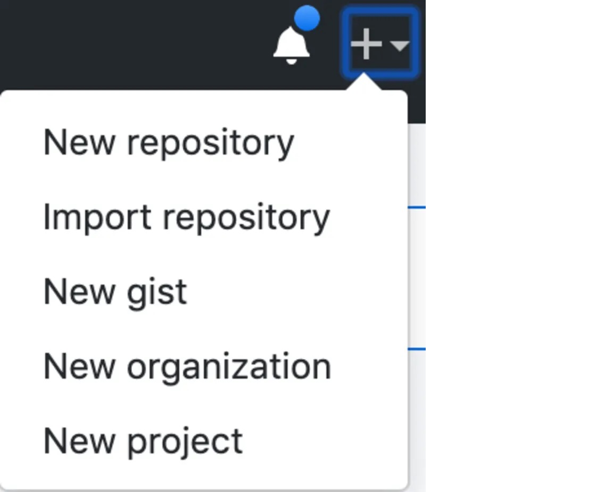
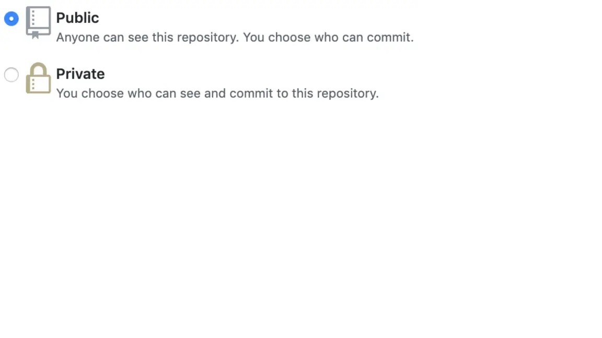
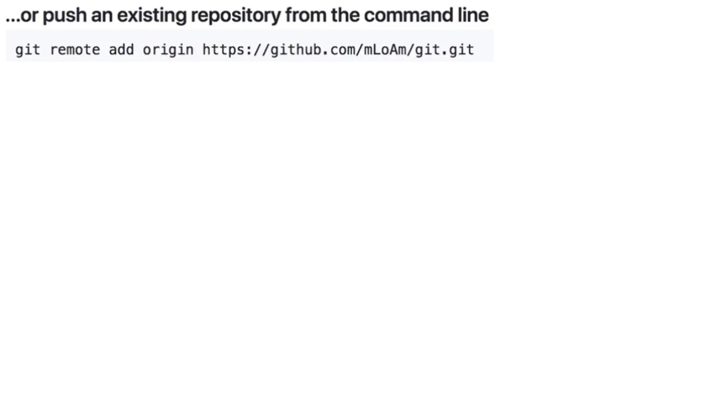
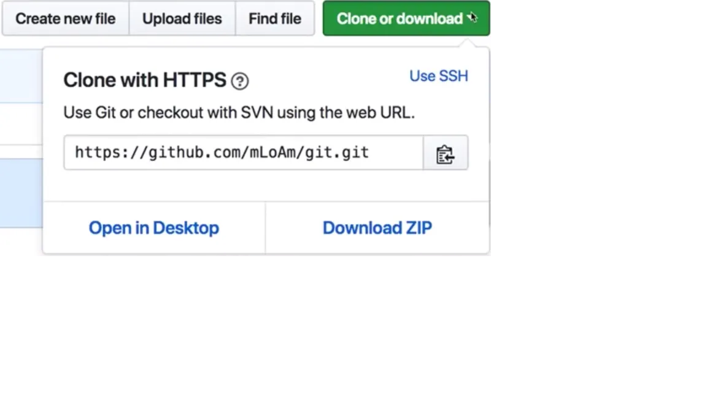

Need terminid võivad tekitada segadust, eriti algajatele. Git on versioonihaldussüsteem, mille saab oma arvutisse alla laadida, GitHub on hostimis- ja koostööpakkuja, mis majutab Giti projekte. See on veebipõhine lahendus, mis võimaldab teil Giti hoidlad sellesse üles laadida. Koodi Giti keskkonnast GitHubi üles laadides muudab selle kättesaadavaks kõigile teistele, kes soovivad projekti panustada.
Git töötab ainult terminalis (MacOS) või käsuviibas (Windows), seega pole sellel graafilist kasutajaliidest (GUI).
Hoidlad, filiaalid ja kohustused

Hoidla on koht, kus kood on salvestatud, seega kaust, mis sisaldab projekti koodi. Pärast selle kausta muutmist Giti hoidlaks, haldab Git projekti koodi versiooniajalugu.
Koodi ei salvestata siiski otse hoidlasse. Meie hoidlas on "alamkaustad" ehk nn filiaalid. Pärast esimese koodi lisamist oma hoidlasse luuakse vaikimisi põhiharu. Kuid me ei piirdu ühe haruga, vaid hoidla sisaldab tavaliselt mitut haru. Nii et need on hoidlad ja filiaalid, kuid kus on meie kood salvestatud? Meie filiaalides! Filiaal sisaldab meie koodi erinevaid versioone, meie kohustusi. Iga sissekanne on koodi konkreetse versiooni hetktõmmis.
Peamised käsud
git init
Kirjutame oma esimese Giti käsu. git initmuudab meie projekti Giti hallatavaks projektiks. Peaksite oma terminalis nägema Initsialiseeritud tühja Git Repository teavet, mis kinnitab, et Git jälgib nüüd projekti. Aga miks on meie projekt tühi?
git olek
git status annab teavet hetkeseisu kohta. Meil on jälgimata faile, mis tähendab, et Git on teadlik, et failid asuvad meie kaustas, kuid me peame Gitil selgesõnaliselt käskima neid faile jälgida (st kontrollima, kas failid on muutunud) ja muudatused salvestada.
git add
Failide jälgimine kas töötab git add filename ("failinimi" peaks olema selle faili nimi, mida soovite jälgida) või git add .jälgib kõigi hoidlas olevate failide muudatusi. git status. - näeme, et lisasime hoidlasse uue faili (meie puhul "index.html"), kuid siiani ei salvestanud me koodis muudatusi .
git commit
Viimase sammuna peame kinnistama või salvestama praeguse koodiversiooni meie hoidlasse. git commit -mlisab meie filiaalile koodi uusima versiooni, -mpeaks andma sisuka sissekandesõnumi. Meie puhul võiksime kasutada git commit -m "added starting code"
Kasulikud Giti käsud

GitHubiga alustamine
Kuidas saame oma kohalikust Giti hoidlast koodi üles laadida nn kaughoidlasse ja mida vajame alustamiseks? Kohalik hoidla ja konto veebilehel github.com – see on kõik!
GitHubil on ka tasuline versioon, kuid kõiki probleemide ja projektihalduse tööriistu pakutakse tasuta, olenemata sellest, kas kasutate avalikku või privaatset hoidlat.
Üks asi, mida tuleb märkida, on see, et avaliku hoidla jaoks ei ole võimalik privaatprojektitahvlit luua, see on vaikimisi lihtsalt avalik ja seda ei saa keelata. Kuni GitHub seda ei muuda, peate kasutama isikliku projekti komplekti privaatseks või projekti privaatses hoidlas.
Kaughoidla loomine
Kuid meil on juba kohalik hoidla, miks peaksime siis veel ühe looma? Idee on luua GitHubis tühi hoidla ja seejärel lükata (st laadida) olemasoleva kohaliku hoidla sisu kaughoidlasse.
Pärast hoidla nime ja (valikulise) kirjelduse andmist peame otsustama, kas tahame luua avaliku või privaatse hoidla.
Nagu nimigi ütleb, näevad avalikku hoidlat GitHubi lehel kõik, privaatsed hoidlad on saadaval ainult valitud inimestele.
Klõpsates "Loo hoidla", luuakse tühi kaughoidla. Olemasoleva kohaliku hoidla sisu saab lisada nii nagu on kirjeldatud lehel, kuhu meid automaatselt ümber suunatakse:
Oluline käsk on git remote add origin URL. See käsk tuleb käivitada tkohalikus projektikaustas (st kaustas, mis sisaldab Giti hoidlat, mille soovite GitHubile edastada):
Hoidlale juurdepääsu andmine teistele kasutajatele
Valik „Kloonimine või allalaadimine” meie kaughoidlas pakub URL-i, mida saab jagada, et anda teistele kasutajatele juurdepääs hoidlale (see on sama URL, mida kasutasime varem kohaliku hoidla GitHubi edastamisel).

Loome uue tühja projekti, mis peaks sisaldama meie koodi GitHubi hoidlast. Meil on URL juba olemas, kusjuures git clone URL("URL" peaks olema URL, mille me just GitHubist haarasime) kopeeritakse kogu kaughoidla kausta ja muudab selle kausta ka Giti hallatavaks kaustaks.
Kloonisime oma hoidla ja saame ka andmeid sellesse kaughoidlasse edastada. See git pushon kõik, mida siin vajame.
Miks on git push piisav? Kuna git clone loodi automaatselt kaugjälgimise haru, mis sisaldab teavet hoidla ja meie kaughoidla filiaali kohta. Kuna Git teab, kust me andmed kloonisime, saame ka nüüd andmed sellele "aadressile" tagasi lükata.
Kaugjälgimise filiaali olemasolu saate alati kontrollida käsuga "git branch -r". Kui kasutate "git push", värskendatakse nii kaugjälgimise haru kui ka kaugharu kohaliku filiaali teabega.
Tähtis. Saate juhtida, kellel on juurdepääs teie GitHubi hoidlale. Kui teie hoidla on avalik, saavad inimesed seda alati kloonida, kuid te saate lükkamise lukustada.
GitHubi põhikäskude ülevaade